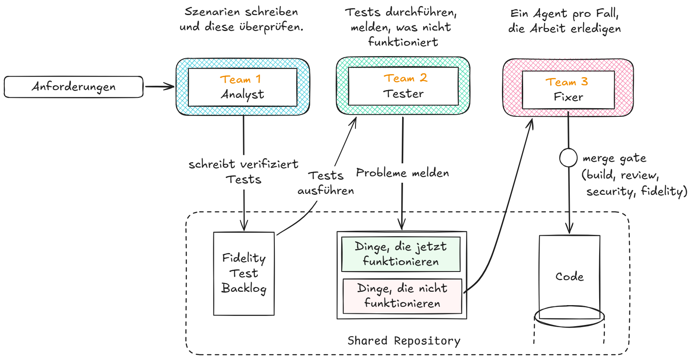
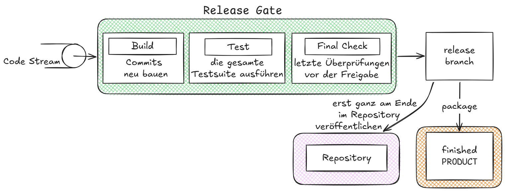

Moderne Softwareentwicklung
KI lässt sich besonders wirkungsvoll einsetzen, wenn ihre Ergebnisse gut überprüfbar sind. In der Mathematik können etwa Beweise oder Gegenbeispiele eine Lösung bestätigen oder widerlegen. In der Softwareentwicklung helfen ausführbare Tests, festzustellen, ob eine Implementierung die erwarteten Ergebnisse liefert. Inzwischen ist KI sogar so gut in der Softwareentwicklung geworden, dass wir mit der Beurteilung der Ergebnisse gar nicht mehr hinterherkommen.
KI kann neben dem Schreiben von Code auch Tests erstellen, Fehler suchen und Korrekturen umsetzen. Für Menschen gewinnen klare Anforderungen, geeignete Prüfverfahren und die Gestaltung des gesamten Entwicklungsprozesses an Bedeutung. Je verlässlicher sich Ergebnisse prüfen lassen, desto mehr Arbeitsschritte können Agenten selbstständig übernehmen. Damit verändert sich die Arbeit in der Softwareentwicklung grundlegend.
„Das ist der Weg!“– Din Djarin
Es führt kein Weg daran vorbei, dass wir klar verstehen müssen, was wir eigentlich wollen und, vielleicht noch wichtiger, warum. Wenn wir das jedoch genau beschreiben können, ist es an der Zeit, die KI auf das Problem loszulassen. Hier möchte ich einen Weg vorstellen, bei dem wir Menschen uns auf die Inhalte konzentrieren und die Fleißarbeit so weit wie möglich der Maschine überlassen.

Damit möglichst viele Agenten gleichzeitig arbeiten können, habe ich sie in drei Teams aufgeteilt. Das erste Team aus erfahrenen Testanalysten zerlegt die Anforderungen in Szenarien und schreibt Fidelity-Tests. Die erstellte Software soll sich exakt so verhalten, wie es in den Anforderungen beschrieben wurde. Dazu werden in den Fidelity-Tests Abläufe, Sonderfälle und Fehlerbehandlung nach den erstellten Referenzszenarien festgehalten. Diese Art der Tests ist für eine KI leichter überprüfbar. Das ist dann auch die Aufgabe des zweiten Teams aus versierten Testagenten. Diese führen die Tests auf dem bisher erstellten Code einzeln aus und erstellen Feature- und Bug-Tickets. Findet ein Tester eine Abweichung von dem beschriebenen Verhalten, wird diese im Backlog dokumentiert. Auch das gewünschte Verhalten wird als Ticket festgehalten. So füllt sich ein internes Backlog nach und nach als Arbeitsgrundlage für ein drittes Team. Die Fixer holen sich jeweils ein Bug-Ticket und denken so lange darauf herum, bis es gelöst ist. Bevor sich ein Fixer auf einen Code committed, wird dieser noch durch ein Merge Gate geschleust. Alle gelösten Tickets müssen nicht nur das eigentliche Problem lösen, sondern auch Mindeststandards an Code Quality und Security erfüllen.

Die Produktivität unserer Agenten führt zu einer Vielzahl an Commits, die für jedes Release in einem Branch zusammengefasst werden. Bevor wir etwas veröffentlichen, stellen wir in einem finalen Test sicher, dass unser Release auch sauber funktioniert. Der Push in das Repository erfolgt erst ganz am Ende.
Würdest du auch so entwickeln?
Teile mir gerne deine Meinung dazu mit.